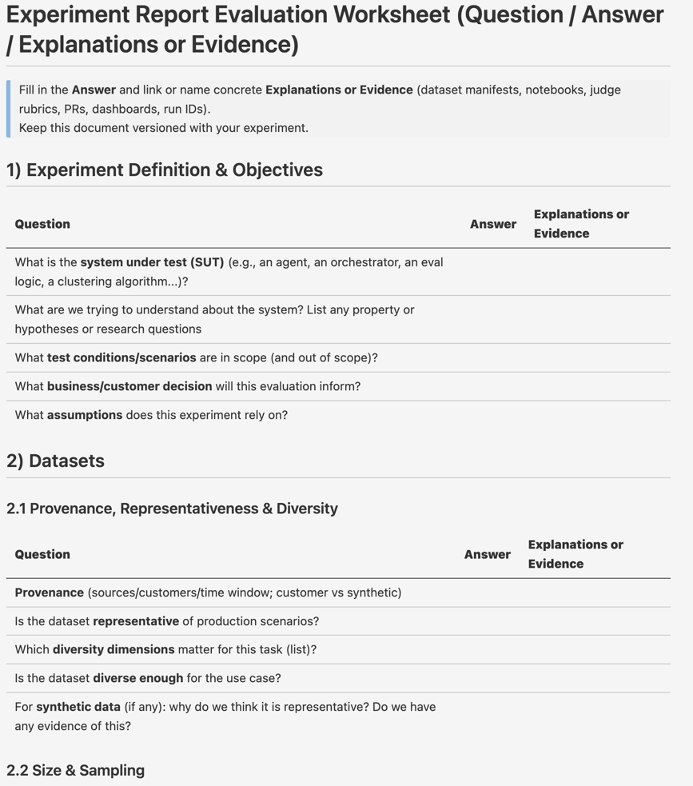
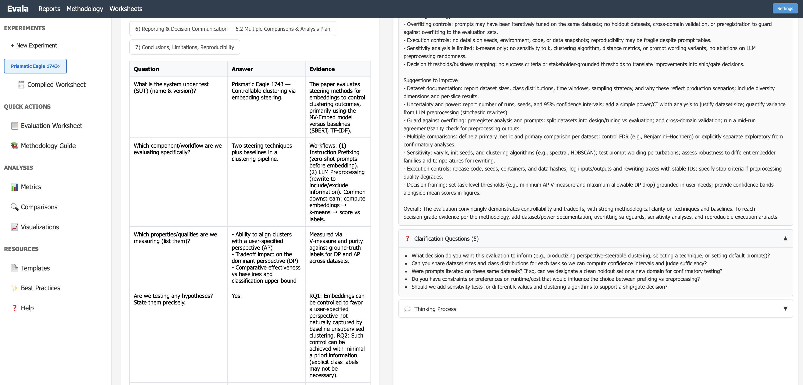

Setting Your Org Up for Success
Part 5 of Iterating in the Dark:
Organizational Blindness in AI Evaluations
← Part 4: Where and Why "Eval" Goes Wrong | Series Index
Recall the three facets of the problem we identified:
The solutions must address all three. But first, let's be clear about what doesn't work.
A note: The company I work for, ServiceNow, handles eval well. But not every company has the luxury of teams that have been bred with agility in mind and the ability to adapt rapidly to a new paradigm. And even for us—this was not easy. At all. The practices in this section are achievable, but they require sustained effort and cultural change.
Every org on the planet is probably sending out best practices, guidelines and mandates on AI evaluation. I do too - with this series :)
A common mandate is "you must have at least 100 ground truth examples", or "you must use the standard rubric" (I do suggest a checklist, by the way).
Sending mandates and best practices is not wrong (except mandating ground truth, which is extremely risky as discussed later). Mandates are in many cases a good thing and a response to the fact that a large number of people are developing AI systems and don't necessarily know how to assess them properly.
What is wrong - and counterproductive - is 1. when we give the impression - in emails, in meetings, in dashboards - that following the mandates is sufficient to deliver reliable results and 2. when we relieve the dev team from accountability for the quality of their eval.
You need to make the dev team (or QA, if you so decide) accountable for the quality of their eval, you need a team that can stand by what they report, not because they follow a mandate but because they are aware of how good evals are done and reported and are clearly outlining what they know and what is uncertain.
Without this, the mandate becomes a shield: "We followed the process." Accountability shifts from delivering reliable results to complying with requirements. And compliance is much easier to game than reliability.
Best practices have the same failure mode. They are useful as starting points. They become harmful when they replace judgment and accountability — when teams stop asking "is this right?" and start asking "did we follow the steps?"
Nothing against ground truth - but I want to put this in the "what does not work" section, because in practice what happens is that teams both overfit and test multiple hypotheses on the same ground truth.
There are few alternatives to testing solutions at scale on actual customer data, and we often don't have the chance to do so.
An additional danger of ground truth is that it brings a "test case" and regression test culture. AI "eval" is not testing.
If a team uses ground truth, that's fine, but do make sure to ask hard questions.
Here's what actually works. Each solution addresses one or more of the three problems:
| Solution | Visibility | Culture | Action |
|---|---|---|---|
| 1. Name things right | ✓ | ✓ | |
| 2. Ask the right questions | ✓ | ✓ | |
| 3. Make RACI clear | ✓ | ✓ | |
| 4. Show, don't tell | ✓ | ✓ | |
| 5. Report uncertainty by default | ✓ | ✓ | |
| 6. Reduce uncertainty at the source | ✓ | ✓ | |
| 7. Build observability | ✓ | ✓ | |
| 8. Use worksheets as thinking tools | ✓ | ✓ | |
| 9. AI methodology assistants | ✓ | ✓ |
This is an instant way to address the issue. Naming always gets you a third of the way there.
If we stop calling this "eval" and start calling it "estimation of a random variable" or "estimating the distribution of value", by itself this will cause teams and executives to put attention in the right place.
"Eval" brings a test-case culture: pass/fail, green/red, 89%. It implies there's a right answer and we're checking if we got it.
"Estimation" brings uncertainty thinking: confidence intervals, sample size, measurement error. It implies we're trying to learn something we don't fully know.
The shift is immediate. When someone says "our eval shows 85%", it sounds like a fact. When someone says "our estimate of accuracy is 85%", the next question is naturally "how confident are you in that estimate?"
Addresses: Visibility (frames the problem correctly), Culture (sets expectations)
In every presentation, every review, every decision, train yourself to ask:
Today, most presenters cannot answer these questions. That's the problem. But you don't need to understand all the sources of error to start asking. Start asking.
Having executives ask these questions gets you another third of the way there. It instantly creates the right culture. Instantly.
Addresses: Visibility (surfaces hidden uncertainty), Culture (makes it safe and expected to discuss)
For every evaluation, someone must be Accountable—not for following the process, but for the reliability of the statement they make about their agent and system. This person should be able to answer:
When accountability is clear, mandates become tools rather than shields. "We have 100 ground truth examples" becomes "We have 100 ground truth examples, and here's why I believe they're representative and here is how we translate the evals over these 100 examples into an uncertainty window." The checklist becomes a starting point, not an endpoint.
Mandate the questions, not the answers. Require teams to answer "what's your uncertainty window?" and "how do you know your data is representative?"—but let them own the answers.
Addresses: Culture (accountability), Action (who acts on what)
Let people see the variability in their own work. One demonstration on your own data is worth ten explanations of the theory.
Run experiments:
When teams see their own numbers wobble, uncertainty stops being an abstract concept. It becomes visceral.
Addresses: Visibility (see variability firsthand), Culture (builds intuition)
When dashboards and reports show confidence intervals rather than point estimates, awareness becomes unavoidable. People cannot ignore what is in front of them. Changing the defaults changes the culture.
Instead of this:
| Metric | Score |
|---|---|
| Technical Accuracy | 89% ✓ |
| Completeness | 84% ✓ |
| Calling Correctness | 72% ⚠ |
Consider this:
| Metric | Estimated Range | Confidence Notes |
|---|---|---|
| Technical Accuracy | 80–94% | Based on 100 samples; prompt sensitivity adds ~5 pts |
| Completeness | 75–90% | Synthetic data may not reflect production diversity |
| Calling Correctness | 62–82% | Small sample (n=50); wide interval expected |
The second table says less with false precision and more with honest information. It invites the right conversations: "Can we get more data to narrow the Technical Accuracy range?" "What would it take to validate on real production samples?"
A common objection is that "executives would not understand it." This is not true. Executives routinely deal with uncertainty in financial forecasts, market projections, and risk assessments. They may ask hard questions—"Why is the range so wide?" or "What would it take to narrow it?"—but these are exactly the questions that should be asked.
To make this concrete, see the Minimum Evaluation Reporting Standard at the end of this document—a checklist of what every evaluation report should include.
Addresses: Visibility (uncertainty is visible), Culture (normalizes uncertainty discussions)
Some uncertainty is actually avoidable. Before accepting bias and uncertainty, ask: can we reduce them? The answer is that in most cases—yes, we can.
Eval at scale on customer data: Uncertainty (and bias) in sample size and data representativeness can be reduced by running evaluations on customer data, and at scale. Sometimes this is not possible, but often this is not done as it may be time consuming, or due to the belief that we need human labelers to generate ground truth.
In practice, we have very rarely seen humans be better judges than LLMs for evaluating ⟨input, output⟩ pairs. When that happens, it is likely that eval guidelines are not well specified, or that the eval is subjective.
I am also yet to see a case where synthetic data is as nuanced as actual, production data. It may be—but that is a feat hard to achieve.
Notice that if we eval at scale, we also greatly reduce the multiple hypotheses testing problem. If we have data at scale, we can have many holdout datasets, but in general a large and diverse test set by itself reduces the problem.
Calibrate LLM judges: We can spend more cycles on calibrating an LLM judge so that the noise due to errors in the eval judge is reduced. This implies effort and dedicated, qualified resources.
Doing this takes effort—and if the impact of uncertainty and bias is recognized, then leadership can ask to put more resources on this.
Addresses: Visibility (understand how much uncertainty remains), Action (direct methods to reduce error)
The biggest problem in agentic deployments today is silent failure. The system runs. It returns something. No errors. But it's not doing what you expected—and nobody notices until months later, if ever.
Why? Because nobody stated what they expected.
Business Assertions are explicit, quantifiable expectations about how your system should behave. They come from PMs, domain experts, and stakeholders—not just engineers. They represent your beliefs about what "working" looks like.
Examples:
These are not just monitoring thresholds—they are statements of belief about your system. Writing them down forces clarity:
Why this matters:
Start with 3-5 assertions. Review them weekly. Adjust as you learn. The goal isn't to be right—it's to be explicit about what you believe, so you can learn when reality differs.
Addresses: Visibility (makes expectations explicit), Action (enables deviation detection), Culture (creates shared understanding of "working")
We can borrow lessons from software engineering and apply them to AI systems to understand where low quality and unexpected behaviors occur.
Agentic Assertions on inputs and outputs:
Introduce the concept of desirable (vs undesirable) agentic execution paths:
Exception handling:
Logging with appropriate granularity:
Raw chain-of-thought should not be logged by default due to safety, privacy, and compliance concerns.
This layer doesn't directly improve your eval scores. But it gives you ongoing visibility into whether your system is behaving as expected—and helps you catch problems that offline evaluation might miss.
Addresses: Visibility (ongoing production insight), Action (feedback loops for improvement)

Worksheets are great tools to help thinking. They do not shift accountability or responsibility, but they help teams think about how the evaluation has been done. A good worksheet has three "columns": a question, an answer, and a request for evidence: how do we know?
Download the AI Evaluation Worksheet — a template covering experiment definition, datasets, ground truth, metrics, execution, and reporting.
It is ok to answer questions with an "I don't know" or "it's just my best guess"—but at least we know what we don't know.
This isn't about catching people out. It's about making the gaps visible—to yourself and to others.
The worksheet can be easily filled automatically by an agent, given a report or a presentation. Then PMs can be aware of which parts are missing and complete them.

Addresses: Visibility (forces estimation), Action (structured approach)
A Center of Excellence is valuable: experts who can review evaluation methodology, ask hard questions, and catch blind spots. But a small team of experts cannot review hundreds of evaluations across a large organization. The expertise becomes a bottleneck.
One approach: encode the function of the Center of Excellence into an AI assistant. An agent that:
This is not a replacement for human judgment. But it can scale the questioning—the part where someone asks "how do you know?" and "have you considered...?"
Think of it as a Center of Excellence at your fingertips. Not a rubber stamp, but a thinking partner that helps teams be more rigorous than they would be on their own.
Addresses: Visibility (surfaces issues), Action (helps estimate and improve)
To make the principles in this series actionable, we propose a Minimum Evaluation Reporting Standard.
Any evaluation result used for comparison, optimization, or decision-making must report the information below. This standard is intentionally minimal: it does not guarantee correctness, but it makes uncertainty and risk visible by default.
The goal is not to block decisions, but to prevent decisions from being made on numbers whose reliability is unknown.
Every evaluation report MUST include:
1. Metric and point estimate
2. Uncertainty
Rough uncertainty estimates are acceptable; absence of uncertainty is not.
3. Sample size and population
4. Comparison structure
5. Optimization exposure (K)
If K is unknown, it must be stated explicitly.
6. Holdout and reuse discipline
7. Known risks and blind spots
8. Decision readiness
This standard directly attacks the three systemic failures:
| Failure | How the standard intervenes |
|---|---|
| Opacity | Forces uncertainty, population, and assumptions into the open |
| Incentives | Makes uncertainty a compliance item, not a personal choice |
| Theater | Forces disclosure of K, reuse, and holdout exposure |
This is not about statistical correctness. It's about making epistemic risk legible.
Better eval gives you two things:
1. Better decisions. Deploy what works, hold what's uncertain, disable what harms. This improves value immediately, without touching the agents.
2. Effective improvement cycles. You know the gradient—which dimensions to optimize, which agents need work, which customers are underserved. Your iterations move in the right direction, and you waste fewer cycles on changes that don't matter.
This is analogous to knowing the gradient in ML: you can always iterate, but without the gradient you're doing random search.
And here's why this matters even more now: AI can write the code. The engineering bottleneck is dissolving. What remains is knowing what to build. The teams with better eval will compound improvements. The teams without it will spin, whether they have 2 engineers or 20.
The next time you see a scorecard with a green 89%, ask:
What range would you sign your name to?
What would you tell a customer if they asked—and you had to stand behind the answer?
What range would you be comfortable owning when this goes to production?
If the team can't answer, the number isn't ready. And neither is the decision.
Back to: Series Index